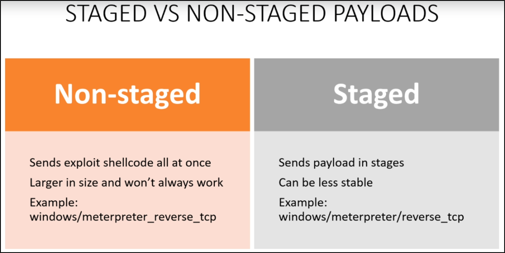
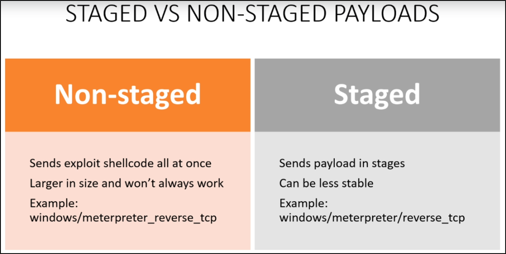

Staged vs Non-Staged Payloads
What is a payload:
What we will run as an exploit
We can send our payload in a Staged and Non-Staged way:
Try both to be sure that some kind of payload is not really working
Example:
Staged send meterpreter with reverse tcp shell in one
Non-Staged send first meterpreter, next start the reverse tcp shell
 
